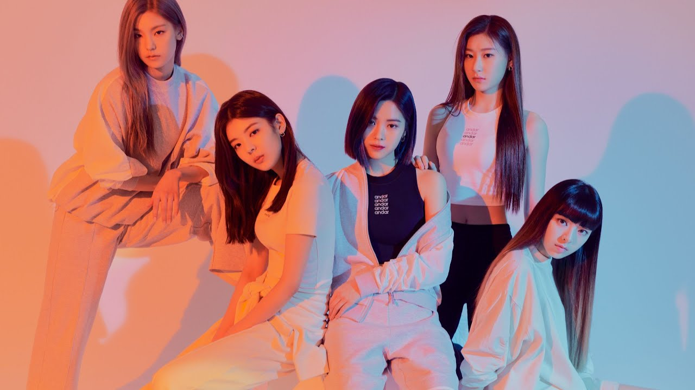

Youtube
ITZY
ITzME
WANNABE
ITZY(있지) "WANNABE" M/V
조회수 255,899,304회 • 2020. 3. 9
1K
0
Share
Save
Report
JYP Entertainment
19.7M
SUBSCRIBE
Up Next

ITZY(있지) "WANNABE" M/V
JYP Entertainment
조회수 1.3천회 • 2주전
HTML/CSS 활용해보기 | HTML/CSS을 이용한 간단 프로젝트 만들기 | 개발자 입문
민송의 코딩일기
조회수 1.3천회 • 8일전
[playList] 코딩할 때 듣기 좋은 노래 | 집중되는 노래 리스트 | 5시간 플레이리스트
musicIsMyLife
조회수 23만회 • 5일전